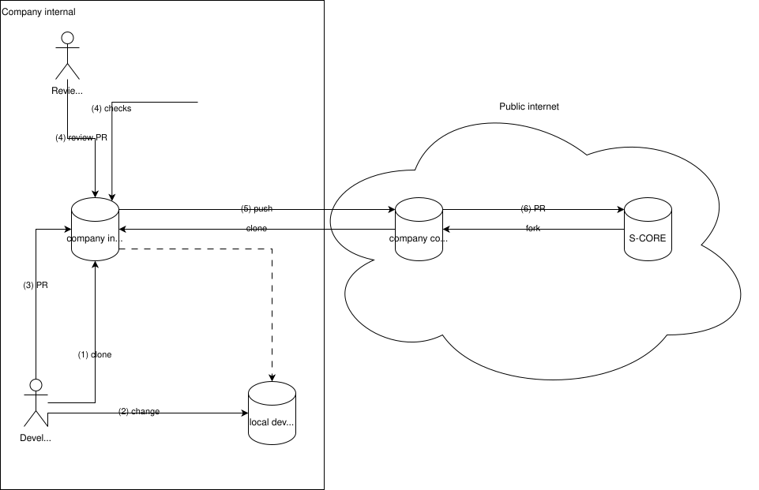

Forking Guide#
Forking Guide
|
status: valid
security: NO
safety: QM
|
||||
1 Purpose & Context#
This guide helps companies (tool vendors, integrators, OEMs, suppliers) decide how to structure forks of S-CORE repositories to:
Contribute efficiently upstream
Integrate internal compliance & security workflows
Keep proprietary or distribution-specific assets separate
Avoid accidental leakage of secrets or internal IP
Automate promotion of reviewed code to the public community dadad
Note
S-CORE spans 50+ repositories. You don’t need a one-size-fits-all approach — pick the minimal model per repository and evolve as needs grow.
1.1 Audience#
Engineering organizations managing both internal and external code flows; platform/DevEx teams formalizing contribution and publication pipelines; compliance and security stakeholders.
1.2 Goals#
Provide a decision and execution framework that reduces friction and risk while keeping the path to upstream contribution short.
1.3 Out of Scope#
License interpretation, export control, internal HR / policy approvals. You must comply with S-CORE licensing independently.
1.4 Private vs Public Forks#
Each model description focuses on WHEN to use it and inherent CONSTRAINTS. Implementation details are in Section 2.
Public Fork#
Use when: You only need to contribute upstream or maintain a long-lived divergence openly.
Pros: Simple, no internal infra, no delays for daily work.
Constraints: No internal-only code separation; risk of accidental leakage if you try to “hide” things manually. Review happens in public, which may not suit all contributions. All authors must be comfortable with public exposure.
Internal Fork#
Use when: You passively consume S-CORE (read-only) or maintain internal extensions not (yet) publishable.
Pros: Freedom to experiment internally; shield proprietary assets.
Constraints: Requires disciplined syncing from upstream to avoid drift. Requires internal infrastructure. No contributions possible.
Note that internal forks can use any infrastructure and do not need to be on GitHub.
Hybrid (Both)#
Use when: You both maintain internal-only additions AND contribute upstream regularly.
2 Implementing the Hybrid Approach#
When organizations need both internal-only work and a path to upstream contribution, adopt a hybrid approach. Below each variant includes a short “use / pros / constraints” summary and recommended practices.
Depending on policy and compliance constraints, pick the simplest viable variant and document ownership for sync and publication tooling.
2.1 Public-first Workflow#
All S-CORE targeting contributions happen directly on the public fork.
Recommendations
Short-lived feature branches (e.g.,
topicor<username>/<topic>)Open an individual PR for each change upstream
Delete merged branches
Notes
Your fork’s
mainmay either track upstream or remain unused.Use pre-commit checks to detect internal-only patterns before pushing.
Use when
You primarily contribute upstream or maintain public divergences.
Pros
Simple: little infrastructure needed and fewer delays for day-to-day work.
Constraints
No built-in separation for internal-only code; manual hiding is error-prone.
History and reviews are public; not suitable for all compliance/privacy needs.
Potentially not suitable for large or sensitive contributions.
2.2 Internal-first Workflow#
Development happens internally; publication to a public fork is an explicit, audited step. This is common where compliance, IP, or privacy constraints apply.
Common reasons
Organizational policies requiring internal vetting before public exposure
Need to shield proprietary assets
Need to restrict author visibility
Workflow overview
Just an example, obviously adapt to your needs.
Development in
company-internal/feature_unverified(branched of fromeclipse-score/main)Pull request to
company-internal/feature_verifiedInternal review of the PR and automated checks (e.g. that no secrets are contained)
If passed, merge to
company-internal/feature_verifiedTransfer to
company-contrib/feature(manual or automated transformation)Open PR to
eclipse-score/main(manual or automated)
The following diagram illustrates this workflow and also highlights the boundaries between public (Internet) and (company) internal space.
{kind=link}

Use when
Your organization mandates internal control and vetting before any public push.
Pros
Good for protecting IP and meeting regulatory/compliance requirements.
Constraints
Requires internal infrastructure and operational processes to manage branches, reviews, and syncing.
Demands disciplined synchronization from upstream to avoid painful drift and costly merges.
Typically increases TTM (time-to-merge) for open contributions; may hinder collaborative workflows.
Note: internal forks do not need to live on GitHub; choose infrastructure that meets your needs.
2.3 Mixing Both Workflows#
Some organizations choose a pragmatic mix: public-first for small changes, internal-first for large or sensitive changes.
Use when
You need both, efficiency and internal-first workflows.
Pros
Flexible: reduce friction for frequent contributions while protecting sensitive work. Lets you apply lightweight public workflows for small items and/or trusted contributors, and heavier internal processes for sensitive work. See when to use-sections in internal-first and public-first workflows for guidance.
Constraints
Adds process complexity and requires clear tooling and ownership to avoid confusion and double-work.
Requires careful documentation and automation to keep transformations, authorship, and history coherent across boundaries.
3. How To work with forks#
First and foremost see GitHub’s guide to working with forks
Note that in enterprise environments forks will usually be created by forking into an company organization (e.g. my_company/score) rather than a personal account. And those will be created by infrastructure administrators rather than individual developers.
You can create such a fork e.g. via the GitHub CLI, gh repo fork eclipse-score/score, or via an infrastructure-as-code process.
The default remote names will be:
origin: your fork (e.g.my_company/score)upstream: the original repo (e.g.eclipse-score/score)
Flow of a feature#
There is a number of ways to achieve the same result in git, and it comes down to personal/team preference. Here is one possible approach.
# Update local main
git switch main
git pull upstream main
# Create a feature branch
git switch -c <feature-branch>
# Commit and push
git add .
git commit -m "<message>"
git push -u origin <feature-branch>
Now you can create PRs from <feature-branch> to upstream/main directly. See GitHub Docs - Creating a pull request from a fork for details.
Alternatively you can use gh pr create to create PRs from the command line.
Opinionated Alternative: change main reference#
If you prefer to keep your local main tracking upstream directly (and avoid maintaining my_company/main), set upstream as the branch’s upstream and fast-forward when needed:
git switch main
git branch --set-upstream-to=upstream/main
git reset --hard upstream/main
This makes daily flow trivial: git pull on main gives you the latest upstream state.
Rest, unsorted#
Transformation / Filtering Pipeline (Copybara Implementation)#
Adds controlled publication with filtering and metadata normalization.
Overview#
Copybara synchronizes code between repositories and can - Mirror internal → public - Filter files - Transform content and metadata - Preserve coherent history
Key Benefits#
Iterative (non-squash) commits:
Retain individual commits
Preserve messages & timestamps
Avoid history compression
File filtering:
Exclude internal-only assets (e.g.,
.github/workflows,copy.bara.sky)Publish only OSS-relevant content
Author preservation:
authoring = authoring.pass_thru("Qorix Bot <bot@qorix.dev>")
Preserves original commit authors for traceability.
Transformations:
Supports core.replace, core.move, core.transform, header injection, folder renames.
Example:
transformations = [
core.replace(
before = "INTERNAL_PATH",
after = "PUBLIC_PATH",
)
]
Minimal Configuration Example#
origin = git.origin(
url = "https://github.com/qorix-group/inc_orchestrator_internal.git",
ref = "main",
)
destination = git.destination(
url = "https://github.com/qorix-group/inc_orchestrator.git",
fetch = "refs/heads/main",
push = "refs/heads/{{BRANCH}}",
)
core.workflow(
name = "publish_branch",
mode = "ITERATIVE",
origin = origin,
origin_files = glob([
"**",
], exclude=[
"copy.bara.sky",
"sync.sky",
".github/workflows/copybara.yml",
".github/workflows/sync.yml",
]),
destination = destination,
authoring = authoring.pass_thru("Qorix Bot <bot@qorix.dev>"),
transformations = [],
)
CI Integration {#ci-integration}#
Example CI steps to generate a GitHub App token, configure git, and run Copybara:
- name: Generate GitHub App token
id: generate_token
uses: tibdex/github-app-token@v2
with:
app_id: ${{ secrets.GH_APP_ID }}
private_key: ${{ secrets.GH_APP_PRIVATE_KEY }}
- name: Configure Git
run: |
git config --global user.name "Qorix Bot"
git config --global user.email "bot@qorix.dev"
echo "https://x-access-token:${{ steps.generate_token.outputs.token }}@github.com" > ~/.git-credentials
- name: Run Copybara
run: |
sed -i "s/{{BRANCH}}/${{ github.event.inputs.branch_name }}/g" copy.bara.sky
curl -LO https://github.com/qorix-group/copybara/releases/download/v20250508/copybara_deploy.jar
java -jar copybara_deploy.jar migrate copy.bara.sky publish_branch
Local Usage#
java -jar copybara_deploy.jar --init-history --force copy.bara.sky publish_branch
Use local runs to preview migrations or sync new branches outside CI.
Challenges & Trade-offs#
Challenge |
Impact |
|---|---|
No native GH default token support Requires state for first branch push Credential & git config ceremony Additional maintenance |
Extra auth setup One-time –init-history nuance Boilerplate in CI Long-term ownership needed |
Summary#
Copybara offers a controlled, scriptable way to synchronize repositories while filtering content and preserving authorship. Use it when manual workflows no longer scale or policy filtering is mandatory.
Keeping Your Fork Updated#
Periodically update your fork’s main from S-CORE main and run internal checks (tests, linting, compliance) before accepting changes. Neglecting regular syncs increases integration cost over time.
Prefer GitHub Apps instead of (Fine Grained) Personal Access Tokens#
Prefer GitHub Apps for automated CI access where possible; fine-grained PATs increase token-management overhead and invite accidental long-lived credential exposure.
TODO: add short examples and links to recommended app installation steps.